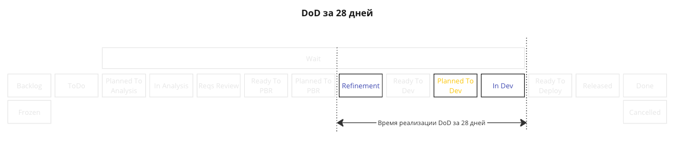

Цветовая палитра
Белый - судьба эпика пока не понятна, все зависит от вас 💪
NavajoWhite - эпик в работе (от 22 до 28 дней), успевайте закончить за 28 дней! - скоро дедлайн!!! 🏃
Оранжевый - эпик все еще в работе, бросайте все и завершайте задачу! - в работе больше 28 дней!!! 👨🏻🚒
Зеленый - эпик завершен, все хорошо - сделали вовремя 👏
Коричневый - эпик завершен, превышение метрики - не уложились в 28 дней 💩
Все эпики должны быть в работе <= 28 дней. Про метрики читаем тут.
Краткая выдержка ниже...
28 дней - Время в разработке
Считается как сумма времени проведенных эпиком в следующих статусах:
Refinement + Planned To Dev + In Dev
